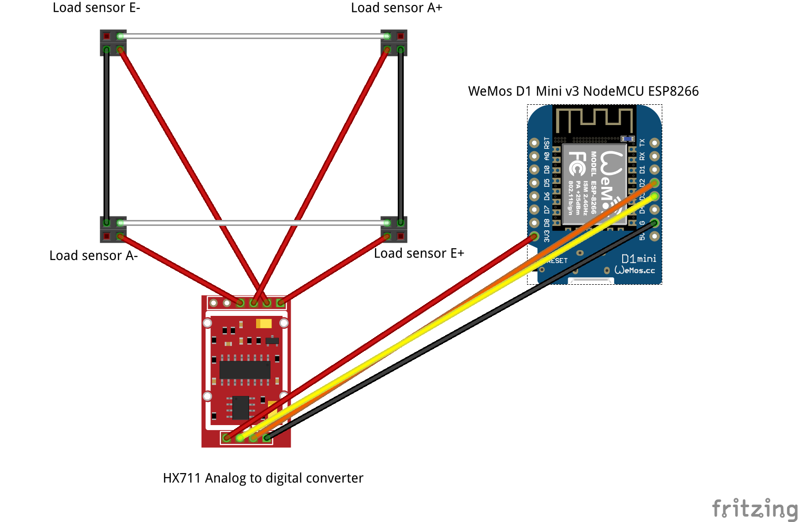
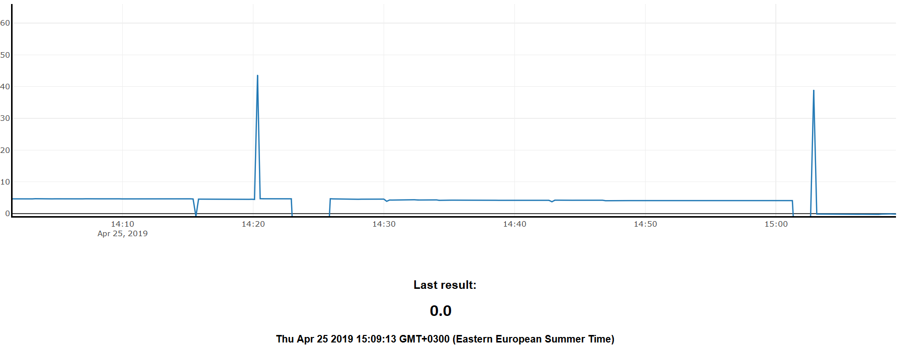
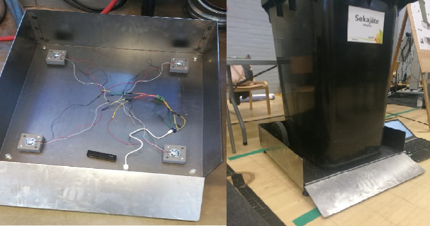
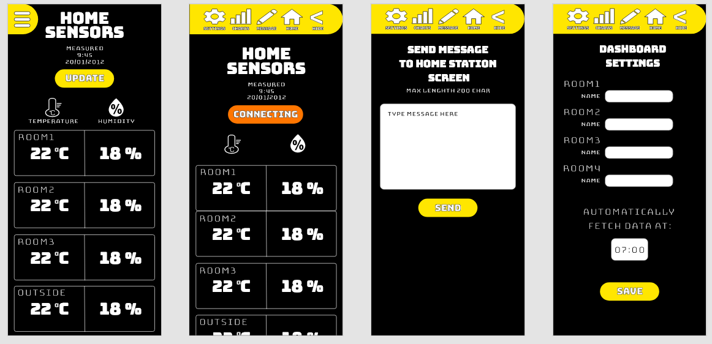

// Developer, Designer, Engineer
age: "29"
country: "Finland"
city: "Kuopio"
from ${ dev.city } , ${ dev.country } .` );
tuomas. webpage ();
/*
Can I do something for you? Contact me at:
tuomas.av.korpi@gmail.com
*/
This is version 2. Documentation of version 1 of this project is available here: Research Gate Link
1 introduction
This research and development is continuation from previous school project “Smart ping pong paddle, Orientation measurement of game equipment”. In that first version the theory was there but final product lacked desired functionality regarding stable orientation and paddle angles. In the second version those basic problems are taken care of by changing the inertial measure-ment unit (IMU) and some additional features are researched like ball hit detection, paddle posi-tion measurement and ball tracking with machine learning.Overall system block diagram is still the same so only the parts that are changed are covered more carefully. Report is structured so that each feature is covered one by one. Paddle position measurement is addressed in “Related works” where possibilities of IMU’s 3D position tracking capabilities are researched. Followed by “Orientation measurement” where we cover the new IMU sensor, theory of rotation in three dimensions and implementation both in MCU’s Arduino code and Unity’s C# code. Orientation and paddle angle measurement are on the main focus here, but after that comes “Hit detection” where the use of piezo tap sensor is considered.
2 Related works
In his thesis “Position Estimation Using an InertialMeasurement Unit Without TrackingSystem” Johnny Leporcq from Aalto university tries to estimate accurate position of an IMU sensor com-posed of accelerometer, gyroscope and magnetometer without any additional tracking system or expensive calibration equipment. Usually GPS is used in pair with IMU to correct position drifting. Precise calibration of each sensor plays crucial part in sensor fusion position estimation and Ex-tended Kalman Filter and Particle swarm optimization algorithms are used for that. To get position velocity is needed and it is obtained by integration of acceleration with respect to time and then again by integrating velocity with respect to time position is calculated. After testing this in prac-tice author concludes that is hardly possible to get reliable position estimation without external tracking system because any small noise or bias or mismatch between accelerometer and gravity signal will cause huge errors after the double integration process.
Due to limitations expressed in the thesis, three dimensional position tracking does not seem via-ble option for Smart ping pong paddle project. Adding external GPS sensor to the system is not good idea either since adding more hardware would affect the playability of the game itself.
3 Orientation measurement
3.1 Euler angles and quaternions
Euler angles store orientation using three angles. These three angles correspond to three object space-axis: Yaw and pitch define which way object is facing, yaw being the horizontal circle and pitch being the vertical circle. Roll measures the amount of twist. There are some disadvantages with Euler angles when defining full 360-degree rotation in every axis, because the three angles are not completely independent from each other so the representation for given orientation is not unique and interpolating between two orientations is problematic. For that reason, in this project Euler angles are only used to show the angle on the screen since they are easy to understand by humans. Actual object orientation is defined by quaternions.
Quaternions avoid problems seen in Euler angles by using four numbers to express an orienta-tion. Quaternion can be described as 4D complex number that expresses angular displacement by using an axis of rotation and an amount of rotation on that axis and consist of scalar and vector components. Unity has functions to define quaternion based on the four values between 0 to 1 (or -1) from the orientation sensor and to transform object based on that.
3.2 Adafruit BNO055 absolute orientation sensor
In the previous version with MPU6050 IMU sensor the sensor fusion and accurate calibration cal-culations turned out to error sensitive and challenging task, so when BNO055 9-DOF Absolute Orientation IMU Fusion Breakout Board does all those calculation on board with the help of ARM Cortex-M0 based processor, it is obvious choice for this project since the size is still small enough.
Like MPU6050 sensor, BNO055 transfers data between transmitter MCU (Wemos D1 mini) via I2C connection. BNO055’s power 3.3-5.0V, ground, SDA, and SCL are connected to corresponding GPIOs.
Calibration is done on in the board every time it is powered on. Gyroscope, accelerometer and magnetometer all need valid calibration data that is gathered by moving the sensor to different positions. A “calibration dance” is required to get the sensor fully calibrated and it takes under a minute. Full (3) calibration value for gyroscope is achieved when sensor is still in any position. Magnetometer may need figure 8 motion in three dimensions to be fully calibrated. Accelerometer is most time consuming one since the sensor needs to be placed in six standing positions, one per side/face.
3.3 Arduino IDE
Compared to earlier Arduino IDE code this one is more simple, since Adafruit sensor and BNO055 libraries make obtaining pre-processed orientation data and calibration state values easy. For ex-ample, next short code snippet is all you need to get one of four needed quaternion values:
bno.begin();
imu::Quaternion quat = bno.getQuat();
String sensorValue = String(quat.w(), 2);
Rest of the Arduino code concerning vibration motor and data transformation via WLAN are pretty much the same with the earlier version. There are two Arduino scripts “transmitter.ino” and “re-ceiver.ino” for each MCU.
3.4 Unity game engine
The “motion2.cs” script handles object rotation in Unity. First it reads data array that receiver MCU wrote to the serial port. It splits array to quaternion and calibration values. Quaternions need to be normalized because floating-point precession errors will cause it to not be unit length. So next in the code normalization is done:
float factor = Mathf.Sqrt(Mathf.Pow(x, 2f) + Mathf.Pow(y, 2f) + Mathf.Pow(z, 2f) + Mathf.Pow(w, 2f));
xNorm = x / factor;
yNorm = y / factor;
zNorm = z / factor;
wNorm = w / factor;
Unity engine has method to create rotation quaternion and transform object function with that:
Quaternion quat = new Quaternion(xNorm, zNorm, yNorm, wNorm);
transform.rotation = Quaternion(quat);
Other unity scripts included do following things: Get quaternion, calibration and angle values on the screen, make it possible to select available COM-port from dropdown menu, and rotate camera manually with arrow keys. That camera rotation is for last adjustment after the calibration to get the view just right.
There are also some scripts for hit detection, that I go over briefly since the concept was aban-doned from the last prototype.
4 Hit detection
Hit detection was an idea to connect piezo disc sensor to the setup and put the sensor on the paddle to make pop-up text indicator appear on the screen when ball hits. Piezoelectric effect measures the electrical potential caused by mechanical force like ball hitting the paddle, where it is easily read with MCU’s analog read pin. Pull down resistor needs to be added between sensor and analog pin. Bigger the resistor more sensitive it is to the hits. Thresh hold was added in Ar-duino code to pick up right amount of force.
Concept gave good results when piezo sensor was only sensor connected to the MCU. But when piezo sensor and orientation sensor were both connected to Wemos D1 mini MCU both sensors started behaving unreliably. MCU might not be able to deliver needed amount of power to sensors at the same time. To keep orientation reliable, hit detection idea was scrapped. Adding more sen-sors to the setup is not good idea anyways since machine learning may be able to gather that in-formation and more.
5 RESULTS AND CONCLUSION
With new orientation sensor set goal of stable object rotation and angle information was success-ful and new avenues for IoT in table tennis was researched. Machine learning and computer vi-sion seems to be a potential direction for information gathering in sports in general.
Here is explanation how Smart Ping Pong Paddle v2 operates:
- 1. Connect receiver to PC’s USB
- 2. Open Unity Application
- 3. Select COM-port where receiver is connected
- 4. Switch power on the paddle
- 5. Vibration motor indicates when paddle MCU has WLAN connection with receiver MCU
- 6. Calibrate by moving the paddle around
- 7. Adjust camera with arrow keys if needed
- 8. Play with it
6 References
Bno055 sensor: https://learn.adafruit.com/adafruit-bno055-absolute-orientation-sensor
Johnny Leporcq, Position Estimation Using an InertialMeasurement Unit Without TrackingSystem: link
Book for orientation theory: 3D math primer for graphics and game development by Dunn and Parberry, 2011 Taylor and Fran-cis Group, LLC
Piezo disc video: https://www.youtube.com/watch?v=sqHJ9tDC9IM
Utilizing deep learning, more specifically computer vision object detection and tracking is the next logical direction for this project as it does not demand modification of a gaming equipment or af-fect the gameplay in any way.
Development paths for such computer vision AI could be ball speed estimation, ball trajectory path estimation, and collection of all kinds of statistics about the game like times each player hit the ball to the net or over the table.
Many of those features are built on the detection of the ball from the video so model was trained using “You only look once” (YOLO) real-time object detection system. Custom dataset was made by taking 200 frames out of 3 different ITTF table tennis videos and labeling ball from each frame. Model training was done following the steps from Youtube video “YOLOv3 in the CLOUD: Install and Train Custom Object Detector” by The AI Guy, so the details are not repeated here.
Model was able to detect the ball with high enough accuracy for all the other features to be pos-sible in theory. This was not yet deep dive into the deep learning but rather proof of concept for the future research and development.
References
YoloV3 model training video: https://www.youtube.com/watch?v=10joRJt39Ns
Waste management companies sometimes bills their customers by the weight of the waste, also it is not legal to put over 60 kilos into the waste bins for safety reasons. It was decided to use IoT technology to inno-vate solutions for waste weight measurement and built a prototype for that.
Prototype for the scale was built that would measure the weight of the bin and send the data to the client. Four load cell sensors were used that handle 50 kg each so maximum weight allowed is 200 kg. Load cells were connected, using Wheatstone bridge, to a analog to digital converter (HX711) that converts pressure on the sensors to voltage calculated in the microchip. Microchip used was ESP8266 WLAN module based chip (ESP8266 NodeMCU). It analyses the information coming from the converter and also sends it to a website by connecting to the internet and Cloud services. All these task are programmed into a microchip using Arduino IDE software.

As a Cloud platform, Google Firebase is used. Firebase provides NoSQL real time database with website hosting, so data is updated almost instantly to the webpage where it is visualized and plotted into a graph. Data can be accessed with computer or mobile with internet connection. ESP8266 board is powered with rechargeable battery through micro USB port. It would be possible also to power them with basic mobile phone charger using AC, as some of the waste bin shelters have electricity for lights and such.

Firebase Cloud services provide hosting only, so website still has to be built from the scratch. Website for the prototype (FIG 2.) was built using basic HTML, CSS and Javascript. Firebase is free to use to a point. If you would like to store more than 1 Gb of data per month it should pe updated to a paid version.
Working prototype was displayed and demonstrated in Savonia University’s IPD fair at the end of the course, where all groups showed their projects.

To train accurate machine learning model a large variety of voice samples from different people is required. Each audio clip needs to be in separate “.wav”-file in the directory with corresponding command as directory name. Splitting words out of long audio files and categorizing them after recording is time consuming task.
Mobile application is developed to do the file classification at the same time with recording. With the app it is easy and fast to go around and ask people to say the commands. Dataset recording app is build for Android platform using Android Studio with Java.
Application functionality explained:
- Select a word
- Press record
- Say the word
- Press stop
- Audio is saved to [SD CARD root] / Audio / [word]. Audio files go to directory with corresponding word as name
- You can play it back to see if its good, if not delete
- When you want to transfer files from phone to PC press “zip and delete all” button. It makes zip file (PATH: [SD CARD root] / zippedAudio) with all recorded audio in right folders and deletes original audio files, so you can continue recording and there is no duplicates when you make zip file again.
- Open Google Drive app on phone and add zip file there
Source code for the app is available HERE
This website is for my projects, but it is itself a project worth mentioning. It is build with vanilla Javascript, HTML and CSS. Source code HERE at Github.
1 Introduction
DeepSpeech is an open-source Speech-To-Text engine, it uses a model trained by machine learning techniques based on Baidu's Deep Speech research paper (https://arxiv.org/abs/1412.5567). Project DeepSpeech uses Google's TensorFlow to make the implementation easier. The documentation for installation, usage, and training models are available on deepspeech.readthedocs.io
This project aims to train a DeepSpeech model recognizing the following 16 Finnish commands: Anni, Annille, Manu, Manulle, Minna, Minnalle, moi, Olka, Onni, Otto, Otolle, tule tänne, netti, soita, kyllä, ei.
2 Environment
The training is done in Ubuntu 18.04. operating system and a computer with CUDA enabled NVIDIA graphics card. The CUDA API allows the model training to be computed using GPU and makes the training roughly 100 times faster than using CPU. CUDA 10.1 installation tutorial for Ubuntu: (https://medium.com/@exesse/cuda-10-1-installation-on-ubuntu-18-04-lts-d04f89287130). Python 3.6 is used for running scripts.
3 Dataset
Dataset consists of audio WAV files of each command said by 3 different persons 10 times making the total recordings 480. Recording is done using Audacity. WAV files are augmented using Matlab audioDataAugmenter library. Augmentation shifts the pitch of every file randomly 12 times making a total recording count of 5760. Audio sample rate is 16kHz and audio format is ENCODING_PCM_16BIT mono channel audio. Matlab script “augmentData.m” is attached in the documentation.
An Android application for dataset recording was made, but due to time constraints it was not optimized for this demo. The application uses the wrong words and records in the wrong sample rate, but it has potential to make dataset collection much quicker.
Here is a link to the current dataset recorder application source code and explanation: https://github.com/korpidigital/datasetRecorder
4 Training
The official DeepSpeech documentation advises to use a virtual environment for the training, but configuring it so that it would have all the necessary libraries had issues. After trying to list them in the PATH file with no response, it was decided not to use one. It did not prove to be an issue, a virtual environment is mostly useful for performance issues when multiple projects with different sets of libraries and dependencies are being developed on the same machine. Here are the steps listed from downloading dependencies, configuring files and folder architecture to running the training.
- Download DeepSpeech repo (https://github.com/mozilla/DeepSpeech). This is the project folder, so the terminal is opened in this path and Linux commands (such as pip3 and python3) in the following steps are run there. For clarity, the terminal commands are coloured purple. In this example the path is </home/tuomas/Desktop/DeepSpeech-0.9.1/>
- pip3 install deepspeech-gpu
pip3 install --upgrade pip==20.2.4 wheel==0.34.2 setuptools==49.6.0
pip3 install --upgrade -e .
- Download “kenlm” language model interface by Kenneth Heafield (https://github.com/kpu/kenlm). Read BUILD file info and build it. Put build files in a folder named “kenlm” and add it to the project folder.
- The project folder has a folder named “training” and in that there is a folder named “deepspeech_training”. Move “deepspeech_training” to the project folder. This makes the training script to have the right path to “deepspeech_training”.
- Download files for scorer creation (https://github.com/mozilla/DeepSpeech/releases/download/v0.9.1/native_client.amd64.cuda.linux.tar.xz) and put those files to path </home/tuomas/Desktop/DeepSpeech-0.9.1/data/lm/>
- At </home/tuomas/Desktop/DeepSpeech-0.9.1/data/lm/> create an alphabet.txt file with each letter (and sign “_” used in “tule_tänne”) separated by line change and vocab.txt file with each command separated by space.
- At </home/tuomas/Desktop/DeepSpeech-0.9.1/data/lm/>
python3 generate_lm.py --input_txt ./vocab.txt --output_dir . \
--top_k 16 --kenlm_bins /home/tuomas/Desktop/DeepSpeech-0.9.1/kenlm/bin \
--arpa_order 3 --max_arpa_memory "85%" --arpa_prune "0|0|1" \
--binary_a_bits 255 --binary_q_bits 8 --binary_type trie \
--discount_fallback
This generates a language model, it is used for the creation of the scorer. The scorer is composed of two sub-components, a KenLM language model and a trie data structure containing all words in the vocabulary. Scorer info: (https://deepspeech.readthedocs.io/en/latest/Scorer.html).
- Make scorer file:
At </home/tuomas/Desktop/DeepSpeech-0.9.1/data/lm/>
./generate_scorer_package --alphabet alphabet.txt --lm lm.binary --vocab vocab-16.txt \
--package kenlm.scorer --default_alpha 0.931289039105002 --default_beta 1.1834137581510284
--force_bytes_output_mode false
- At </home/tuomas/Desktop/DeepSpeech-0.9.1> make 5 new folders
mkdir checkout
mkdir model_export
mkdir train
mkdir dev
mkdir test
- Dataset is divided between “train”, “dev” and “test” folders (70%, 20%, 10%). CSV-files for training consists of “wav_filename” - path of the sample, “wav_filesize” - samples size given in bytes, “transcript” - transcription target for the sample. A python script “py” was created for CSV creation, but it requires data to be structured so that “train”, “dev” and “test” folders have a folder “all” and in that folder there are folders named by each command. So the dataset is divided and the same data is put in two places, for example: </home/tuomas/Desktop/DeepSpeech-0.9.1/train> and </home/tuomas/Desktop/DeepSpeech-0.9.1/train/all/annille> for training and for CSV creation.
- At </home/tuomas/Desktop/DeepSpeech-0.9.1/>
python3 create_csv.py --target train
python3 create_csv.py --target dev
python3 create_csv.py --target test
- Training the model:
sudo python3 DeepSpeech.py --train_files /home/tuomas/Desktop/DeepSpeech-0.9.1/train/train.csv \
--dev_files /home/tuomas/Desktop/DeepSpeech-0.9.1/dev/dev.csv \
--test_files /home/tuomas/Desktop/DeepSpeech-0.9.1/test/test.csv \
--train_batch_size 80 \
--dev_batch_size 40 \
--test_batch_size 40 \
--n_hidden 376 \
--epochs 55 \
--learning_rate 0.00095 \
--report_count 100 \
--export_dir /home/tuomas/Desktop/DeepSpeech-0.9.1/model_export/ \
--checkpoint_dir /home/tuomas/Desktop/DeepSpeech-0.9.1/checkout/ \
--alphabet_config_path /home/tuomas/Desktop/DeepSpeech-0.9.1/data/lm/alphabet.txt \
--use_allow_growth true \
--dropout_rate 0.3 \
--summary_dir /home/tuomas/Desktop/DeepSpeech-0.9.1/summary \
--export_tflite \
--cache_for_epochs 2 \
--augment reverb[p=0.1,delay=50.0~30.0,decay=10.0:2.0~1.0] \
--augment resample[p=0.1,rate=12000:8000~4000] \
--augment codec[p=0.1,bitrate=48000:16000] \
--augment volume[p=0.1,dbfs=-10:-40] \
--augment tempo[p=0.1,factor=1~0.5] \
--augment warp[p=0.1,nt=4,nf=1,wt=0.5:1.0,wf=0.1:0.2] \
--augment frequency_mask[p=0.1,n=1:3,size=1:5] \
--augment time_mask[p=0.1,domain=signal,n=3:10~2,size=50:100~40] \
--augment dropout[p=0.1,rate=0.05] \
--augment add[p=0.1,domain=signal,stddev=0~0.5] \
--augment multiply[p=0.1,domain=features,stddev=0~0.5]
NOTE: The above command is for Android platform model. For Linux platform exclude the “--export_tflite” command. “—augment” commands are optional. Other parameters can be tweaked for slightly different outcomes. Batch size depends on GPU performance. Hidden layers are between 100 – 2400, but increasing the amount of layers slows the training. 50 epochs should be enough to achieve loss under one.
- Only for the Linux platform model. Convert PB file to PBMM file:
python3 util/taskcluster.py --source tensorflow --artifact convert_graphdef_memmapped_format --branch r1.15 --target .
./convert_graphdef_memmapped_format --in_graph=./model_export/output_graph.pb --out_graph=./model_export/output_graph.pbmm
- A produced model file (model.pbmm or model.tflite) and a scorer file (kenlm.scorer) that are used for speech recognition interface in Linux or Android platform are completed.
5 Android application
Android demo application builds upon the official DeepSpeech example “android_mic_streaming” (https://github.com/mozilla/DeepSpeech-examples). Modified source code is attached with documentation. Code is opened with Android Studio IDE and it uses Kotlin as the coding language.
When phone is paired with Android Studio, model and scorer files are copied to the phone’s SD-card root folder through Android Studio terminal using the following command: sudo adb -d push /home/tuomas/Desktop/DeepSpeech-0.9.1/model_export/output_graph.tflite /home/tuomas/Desktop/DeepSpeech-0.9.1/data/lm/kenlm_tflite.scorer /storage/emulated/0/Android/data/org.deepspeechdemo/files/
Crucial modification to improve the recognition functionality is that a new recording stream is started after every prediction. Also functions for giving a name and storing it to the “name.txt” file and making a phone call are added.
If no name is given (no name.txt file created) and command “moi” is detected, then the app responds with audio: “Minulla ei ole nimeä. Olenko Olka vai Onni?”. Then when it detects “Olka” or “Onni” the name is saved to the name.txt file and next time it detects the “moi” command it responds with: “Nimeni on Onni/Olka”.
At the moment “soita” command has two phone numbers under two names. It makes a call to dedicated number if it detects “soita” and after that detects “otolle” or “minnalle”.
Video for Android Application demo: https://www.youtube.com/watch?v=0DVFdk3BF_g&feature=youtu.be&ab_channel=TuomasKorpi
Video for Laptop demo: https://www.youtube.com/watch?v=BWyiBhLO1H0&feature=youtu.be&ab_channel=TuomasKorpi
6 Results
Attached with documentation the “models” folder includes models trained with different training parameters, which are listed in the folder name. Model version 5 is used in the Linux demo and it recognizes all of the 16 commands. Model version 10 is used in the Android app and it recognizes 11 commands, excluding the following: kyllä, ei, tule tänne, netti. There were small differences when training with different parameters.
The recognition is quite accurate, but it struggles with noisy environments. No apparent issues are present even when distance is increased to 5-10 meters (see video for proof). More training would certainly fix the issue with noisy environments, it has, so far, only been trained with the voices of 4 people, the more the better. For instance the commands “onni” and “anni” are very similar, so sometimes it mixes them.
7 Conclusion and going forward
In optimal conditions, meaning no background noise, the model performs quite well and is able to make right predictions and implement given functions based on them most of the time. If more speakers would contribute to dataset and background noise augmentation would be added, then the performance could improve greatly.
It would be interesting to try to develop the model in a more general direction since there are some Finnish datasets available on the internet.
Website for one man construction company. Done with HTML, CSS and Javascript: https://rakennuspalvelupitkanen.github.io/

Idea
Project idea is to create temperature/humidity sensor network to my home and build an Android app to display the data. Main sensor station at home has a small screen where short messages can be send.

Technology
- Programming: Android Studio Kotlin / Arduino IDE
- Sensors: DHT22
- Microcontrollers: ESP8266 NodeMCU
- Database: Firebase Realtime NoSQL Database
Reference
Source code at: GITHUB